Jade Gouache Storybook
A cosy bedtime-story dragon: opaque matte gouache, soft rounded shapes, warm jade and apricot.
- Finish
- Opaque matte gouache, soft brush-pen outline in deep teal-brown, one soft shadow tone, a chalky highlight dab.
- Palette
- jade, apricot, cream, coral
- Strength
- The clearest Drachen of the set: one jade diamond with a face, a soft snout patch, horns and a scale belly; the open wings carry cream cloud swirls. The cloud, Walldorf and mine come back in exactly the same hand (teal line, coral swirls, speckles). Warm and soft, so it feels like the game's current look grown up.
- Risk
- Softest outline of the four, so at 48 px the silhouette leans on the horns and the tail; and it is the least surprising next to the existing crayon kite.
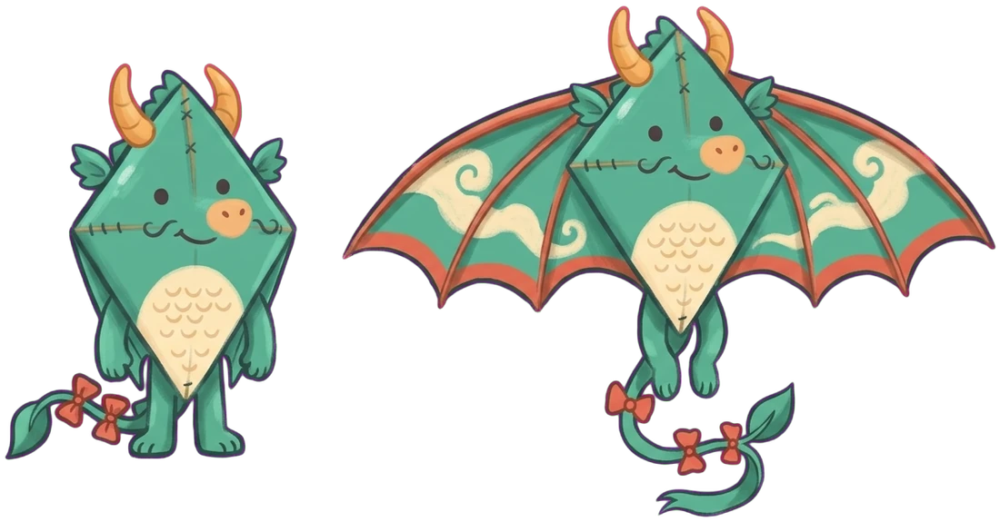
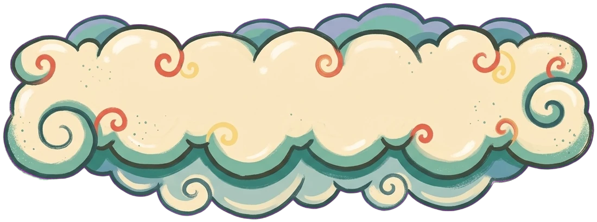
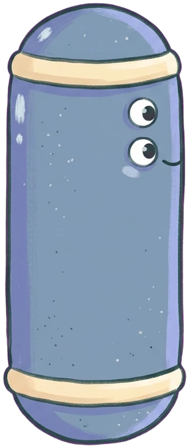
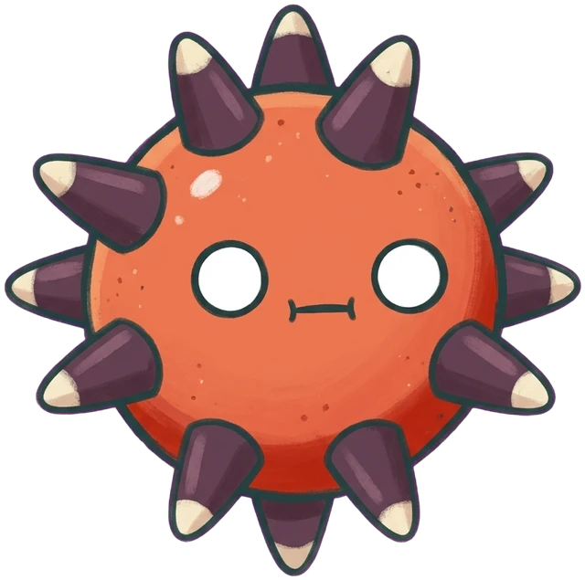
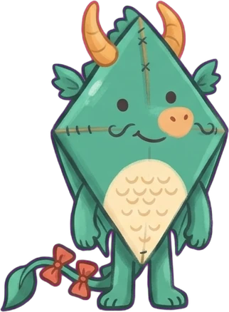
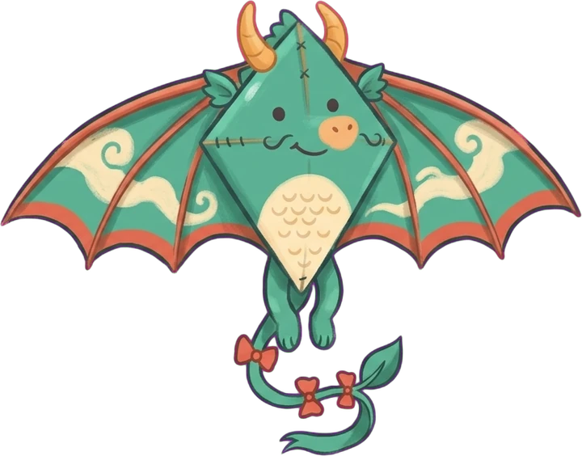
Small-size test
611 distinct colours in the character sheet (a measure of how busy it is).
Your call
Notes
Claude's read
Best all-rounder. It is the only style where all four pieces are painted, and they are visibly one family. The kite is the dragon, the face is cute, and the colour (jade on a navy night) separates it from every other build. I would take this one and tune the line weight up a touch.
Folk-Art Silk & Bamboo
A real kite-maker's dragon: bold flat colour on painted silk, ink outlines, scale and cloud-scroll patterns.
- Finish
- Bold flat colour fields, thick black-brown ink outline, scale arcs and cloud-scroll patterns instead of shading, bamboo spars with nodes.
- Palette
- vermilion, gold, turquoise, indigo, cream
- Strength
- The most dragon and the most distinctive: antler horns, a gold scale belly, turquoise cloud-scrolls on the wings, a leaf-tipped tail. It looks like a kite a real maker would paint, which is the strongest story for a German Drachen.
- Risk
- Busiest: 800+ distinct colours in the character sheet, so 16-frame sheets are the hardest to keep identical, and the face (snout patch with a small curl) is the least cute of the three kite versions.
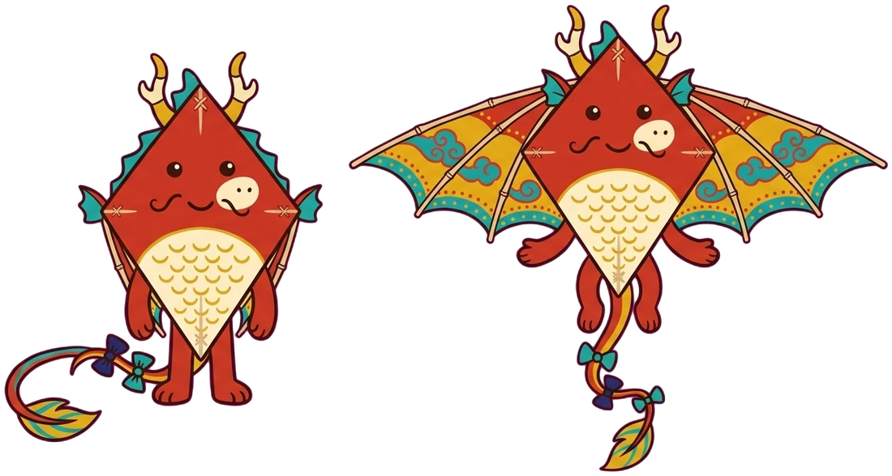
Your call
Notes
Claude's read
The boldest choice and a great art story, but the pattern work makes every animation sheet expensive and the face is the weakest point. Cloud, Walldorf and mine are not painted yet (the image quota ran out), so its family fit is unproven.
Candy Sticker Pop
A premium mobile-game dragon: clean thick outlines, two-tone cel shading, bright happy candy colour.
- Finish
- Perfectly smooth flat fills, one hard-edged shade tone, a four-point sparkle, a thick even deep-indigo outline.
- Palette
- mint, aqua, yellow, tangerine, lavender
- Strength
- Strongest silhouette and the cheapest to animate: thick even line, flat fills, instantly readable at 48 px, and the wings (aqua with yellow edge and lavender spars) pop against the navy.
- Risk
- The right eye came back as an oversized white patch with a small pupil, which reads as an eye-patch (a re-roll fixes it). It is also the most generic mobile look and the furthest from the hand-drawn world of the existing game.
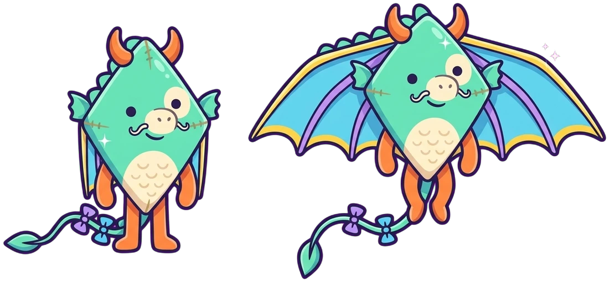
Your call
Notes
Claude's read
The safest for readability and production. It trades warmth for polish: it would make the game look like many others. Cloud, Walldorf and mine are not painted yet (image quota).
Ember Crayon Baby Dragon CHOSEN
The literal baby dragon in the game's own hand-drawn finish: a chubby reddish hatchling, crayon and coloured pencil.
- Finish
- The game's existing hand-drawn finish: brown crayon outline, pencil-grain fills, one cel shadow, one highlight.
- Palette
- ember red, brick, cream, gold, dusty blue
- Strength
- The cutest face of all four: big shiny eyes, blush cheeks, gold horns and ear fins, a cream belly. The open pose, with red kite-wings and gold edge, is lovely and the finish already matches every sheet in the kite build.
- Risk
- It reads as a baby dragon with wings, not as a kite: the closed state has no kite body at all, so the kite identity (and the Drachen idea) rests only on the wings and the ribbon tail. The red body on a warm world also gives less hue contrast than jade.
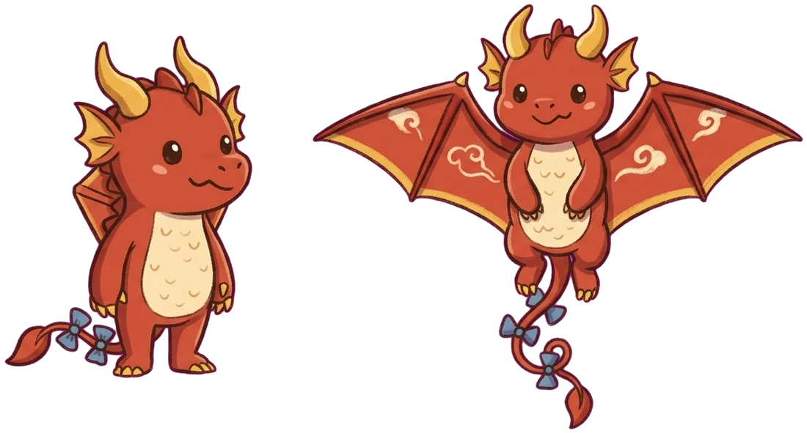
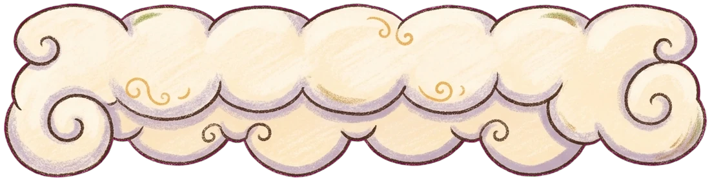
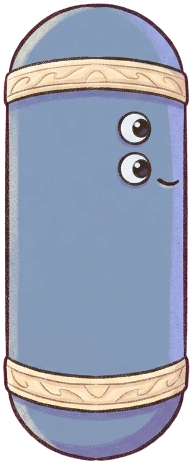
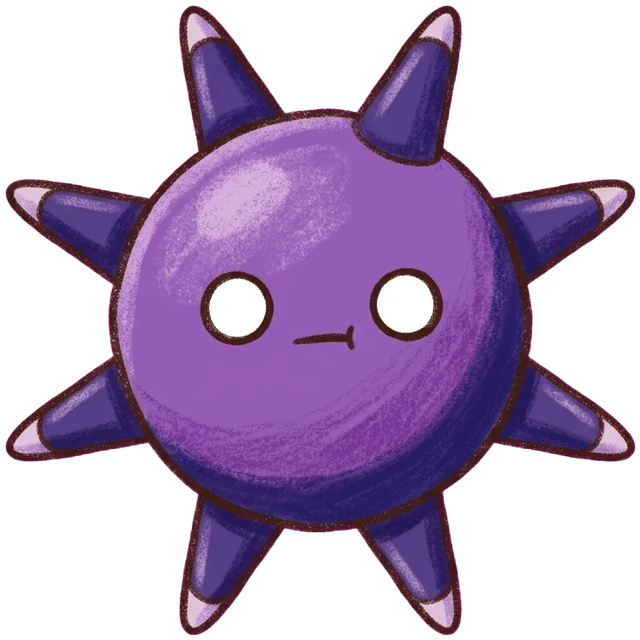
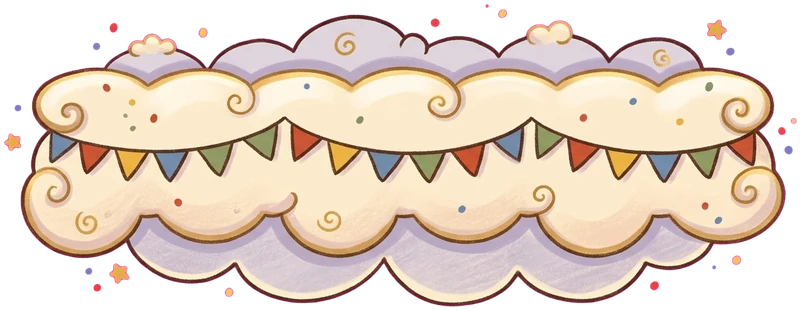
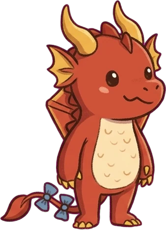
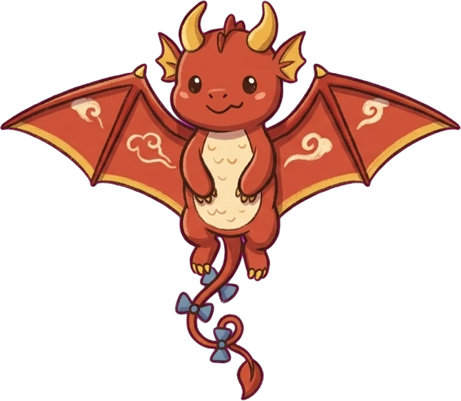
Small-size test
508 distinct colours in the character sheet (a measure of how busy it is).
Your call
Notes
Claude's read
The best character, the weakest kite. Pick it if you prefer a creature hero over a kite-shaped one; it is the least new, so it ships the most consistently. Its cloud, Walldorf, mine and finish platform are now painted in the same crayon hand (family 4/5: the Walldorf face sits off-centre and the finish cloud has a lavender back layer worth a re-roll).
Side by side
The checks that decide it: does it still read when small (set the page to a phone size), against both night and day grounds, and is it one family across all four pieces.
Scores and decision
| Criterion | A · Jade Gouache Storybook | B · Folk-Art Silk & Bamboo | C · Candy Sticker Pop | D · Ember Crayon Baby Dragon |
|---|---|---|---|---|
| Cuteness Would a player want to hug it? | ★★★★★ | ★★★★★ | ★★★★★ | ★★★★★ |
| Reads as Drachen Kite AND dragon in one object, not a creature next to a kite. | ★★★★★ | ★★★★★ | ★★★★★ | ★★★★★ |
| Legible at 48 px Silhouette and face still read on a phone. | ★★★★★ | ★★★★★ | ★★★★★ | ★★★★★ |
| Looks new Different from the drawn, lantern and current crayon kite builds. | ★★★★★ | ★★★★★ | ★★★★★ | ★★★★★ |
| Cheap to animate Fewer details to keep identical across 16-frame sheets. | ★★★★★ | ★★★★★ | ★★★★★ | ★★★★★ |
| Fits the game Sits with the existing world, the navy night ground and the kite mechanics. | ★★★★★ | ★★★★★ | ★★★★★ | ★★★★★ |
| One family across 4 pieces Cloud, Walldorf and mine look painted by the same hand as the character. | ★★★★★ | pending | pending | ★★★★★ |
| Total | 26 / 30 | 21 / 30 | 25 / 30 | 21 / 30 |
Decision
DECIDED: D · Ember Crayon Baby Dragon. The reddish baby dragon in the game's own crayon finish is the direction. The other styles stay in this report as the record of what was considered; their remaining pieces will not be painted. D's cloud, Walldorf, mine and finish platform are painted; the full kite sheets are next.
Your decision
Nothing picked yet.
How it was made
Every piece was painted through the Art Desk's Gemini window: the character reference first, from a flat grey layout built from the shipped Pweeg-Kite silhouettes (closed and deployed at the game's own proportions), then the cloud, Walldorf and the mine, each with that style's finished character attached as the style anchor so the four pieces come from one hand. Magenta ground keyed out for this page. Nothing here is wired into the game yet.
Status: all four characters are painted and style D was chosen. D's cloud, Walldorf, mine and finish platform are now painted too, so its four supporting pieces can be judged as one family. A's cloud, Walldorf and mine exist; the other styles' remaining pieces were cancelled. Nothing is wired into the game yet.
The two character designs
Pweeg-Drachen — German "Drachen" means kite AND dragon: the kite itself is the dragon.
THE CHARACTER — Pweeg-Drachen. In German the word "Drachen" means BOTH a kite and a dragon, and he is both at once: A KITE THAT IS A DRAGON. He is NOT a dragon creature holding, wearing or standing in front of a kite: THE KITE ITSELF IS THE DRAGON, one single object, cute, round, friendly, never scary. · HEAD AND BODY IN ONE: a single diamond-shaped paper kite, seen flat-on like a paper kite. A cute face is painted right ON the diamond's sail: two dark dot eyes, a small smile, a soft rounded snout patch on the right-hand side of the face with two tiny nostril dots, and two short curly whiskers. There is NO separate head, NO neck and NO creature body behind or in front of the sail. · DRAGON FEATURES BUILT INTO THE KITE: two short curved horns growing from the top corner of the diamond, two small leaf-shaped ear fins at its side corners, a row of little spine fins along its top edges, the crossed bamboo spars showing as lines with a few stitches, and the lower half of the sail painted as a lighter belly panel with rows of small scale arcs. He NEVER wears sunglasses, goggles or glasses. · LIMBS: like a cute kite mascot — two stubby little arms from the sides and two stubby little legs from the bottom corner of the diamond. · TAIL: the kite's tail is a dragon tail: a long ribbon-like tail with two or three small ribbon bows, ending in a leaf-shaped tuft. · CLOSED: the wings are folded flat against the sail as two narrow folded panels along the sides of the diamond, so the closed hero is the compact diamond standing on his stubby legs. · DEPLOYED (kite open): wide delta kite-wings spread out from both sides of the SAME diamond — taut sails over spars like dragon-wing fingers with a scalloped trailing edge, together spanning about three times the width of the closed diamond. The face stays on the central diamond, the stubby legs dangle below, and the long tail with its ribbons streams below. · The closed and the deployed drawing are the SAME character: identical face, proportions, colours, line and shading.
Pweeg-Drake — The literal baby dragon: a chubby hatchling whose wings are the kite.
THE CHARACTER — Pweeg-Drake, a cute BABY DRAGON hatchling whose wings are his kite: chubby, big-headed, round, friendly, never scary. · BODY: a plump little dragon standing upright on two stubby legs with two stubby arms, facing RIGHT: a big round head with a short soft snout (two tiny nostril dots), two short curved horns, two small leaf-shaped ear fins, big shiny dot eyes and a small happy smile; a round tummy with a lighter belly panel carrying a few rows of small scale arcs; a row of little spine fins down his back. · TAIL: a short curly dragon tail ending in a leaf-shaped tuft, with a short string of two or three small ribbon bows trailing from it like a kite tail. · CLOSED: his wings are folded flat against his back as two small neat folded panels. · DEPLOYED (kite open): the folded wings spring open into two wide delta KITE-WINGS, each a taut sail stretched over spars like dragon-wing fingers with a scalloped trailing edge, together spanning about three times the width of his closed body. Head, face and belly stay in the middle, his little legs dangle below, and the long tail with its ribbons streams down and behind. · He NEVER wears sunglasses, goggles or glasses. The closed and the deployed drawing are the SAME character: identical face, proportions, colours, line and shading.
The four style prompts (finish and palette)
A · Jade Gouache Storybook
OPAQUE MATTE GOUACHE on soft paper, as in a modern picture book. Flat-ish fills laid in with visible brush dabs and a little dry-brush grain at the edges of each shape; ONE soft-edged shadow tone on the side away from a gentle upper-left light, and ONE small chalky white highlight dab. Outlines are a soft brush-pen line in a DEEP COLOURED tone (dark teal-brown #2c3e3a), medium weight, slightly uneven, never pure black and never a clean vector line. Soft, rounded, chunky, friendly shapes. A few tiny paint-speckle dots here and there, nothing else decorative. Palette: jade green #58b59b with a deeper jade #2f8a7a shadow, warm apricot #f4b96a, cream belly #fbe9c4, coral-vermilion accents #e8644f, soft butter yellow #f7dc8a, dusty teal-blue #6aa6b8; warm and gentle, slightly muted, never neon
B · Folk-Art Silk & Bamboo
HAND-PAINTED TRADITIONAL FOLK KITE, as a Weifang kite-maker would paint it on silk over bamboo: bold FLAT colour fields, a strong confident ink outline in black-brown (#26140f) of even weight, and DECORATIVE PATTERN used instead of soft shading — rows of scale arcs, cloud-scroll curls, dotted borders and tiny wave lines. Shadow is only a darker flat tone or hatch lines, never a gradient. Bamboo spars are pale tan with small node rings. A hair of woodblock-print imperfection (a colour fill slightly off its outline in places) is welcome. One small white highlight dot per eye, nothing else glossy. Palette: vermilion red #d9382c, imperial gold #f2b705, turquoise #1fa3a3, deep indigo #243a73, cream #fff1d0 and a little jade green #3f9b6a; saturated and warm, very graphic
C · Candy Sticker Pop
CLEAN MODERN MOBILE-GAME CEL ART, like a premium sticker: perfectly smooth flat fills with NO texture, NO grain and NO pencil or brush marks; ONE crisp hard-edged darker shade tone, a soft lighter rim on the upper-left, and ONE small four-point sparkle highlight. A thick, perfectly even deep-indigo outline (#2a2350) with rounded joins. Simplified geometric, bubbly shapes, glossy-cute, instantly readable as a tiny icon. Palette: candy mint #5ee0b8, sky aqua #4cc3f0, sunny yellow #ffd23f, tangerine #ff8a3d, blue-violet lavender #a78bfa, cream #fff6dc; bright, saturated and happy
D · Ember Crayon Baby Dragon
HAND-DRAWN ON CREAM PAPER, SOFT CRAYON AND COLOURED-PENCIL, CEL-SHADED, CUTE AND COZY — the finish this game already has. Soft crayon outlines in a warm dark brown (#3b2a20), never pure black and never a clean vector line: slightly wobbly and grainy like a real crayon, heavy enough to hold at thumbnail size. Colour laid in like crayon and coloured pencil: flat-ish fills with visible soft pencil grain inside them, ONE crisp-edged cel shadow tone on the side away from a soft upper-left light, and ONE small highlight. No airbrush gradients, no rendered 3D look, no glossy plastic. Palette: ember red #d9533c with a brick-red #a8382b shadow, warm cream belly #fbe6c0, golden yellow #f2b84b, dusty blue #6f94b8, warm browns, a touch of moss green; warm storybook colours, slightly muted, never neon
If you pick one — what happens next
- Paint D's cloud, Walldorf idle and mine idle so the four pieces can be checked as one family (node art-sheets/dragon-kite/run.mjs art-sheets/dragon-kite/jobs-crayon.json, then key.py and build-report.mjs).
- Use the approved crayon-character image as the new style sheet (art-sheets/umbrella/style/) for the baby-dragon skin.
- Add the baby dragon's design, finish and palette to the kite manifest as a new art set, export the layout references, and paint the model sheet first, then idle, walk, hover (wings open), fall, terminal, broken, cheer, flattened, destroyed and front, then the world sheets.
- Decide how the closed state keeps the kite idea (the folded wings and the ribbon tail are all that say 'kite'), and give the open state the kite spars and the scalloped wing edge so it still reads as the kite mechanic.
- Slice and compress through the Art Desk, add the art switch and build script, then run the sharpness probe on the live build.